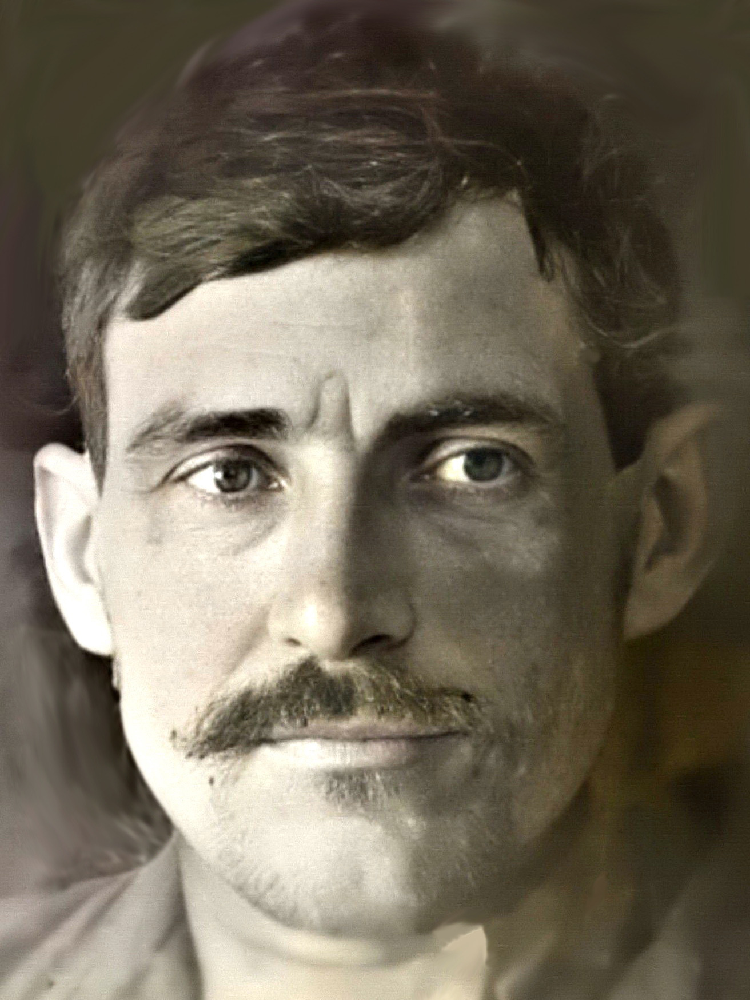

Прохор Романович Мартынец

Родился в семье крестьян примерно в 1892 г. в украинском хуторе Волков (укр. Вόвкiв или Вовки́) Гадячского уезда Полтавской губернии (ныне с. Яснопольщина Сумской области Украины), где и прошла вся его жизнь. По национальности украинец. У своих родителей, Романа и Дарьи Мартынец, Прохор был очень поздним ребёнком. Позже него родилась только его сестра Марина (~1895). Их отец к тому времени был уже, очевидно, старше 60. А потому без отца Прохор остался довольно рано, примерно в 8 лет. Братья и некоторые из племянников Прохора были ощутимо старше его самого. Все они со своими большими семьями жили в том же хуторе. По всей видимости, в приходской школе Прохор не учился и оставался в течение жизни неграмотным, поскольку ни на одном из имеющихся документов нет его подписи.
Ещё до начала Первой мировой войны, в январе 1912 г., Прохор впервые женился. Его невеста, Ксения Зиновьевна Трегубенко, жила неподалёку. Молодую семью Прохор Романович обеспечивал, выращивая хлеб. Ксения родила Прохору троих детей. Один из сыновей, Кирилл (1915–1917), прожил всего два года и умер от «детского припадка». Вскоре после рождения ребёнка Прохора Романовича призвали на войну, а к 1917 г., когда тот умер, Прохор Романович уже, видимо, вернулся домой и числился запасным солдатом. Впрочем, с началом Гражданской войны, его снова забрали в армию. Оставшись без кормильца, семья Прохора Романовича начала голодать. А когда он вернулся домой, ни жены, ни детей уже не было в живых — все они умерли от истощения.
Не позже 1924 г. Прохор Романович во второй раз женился. На сей раз — на Марии Швец из соседней деревни Ягановка. Молодая супруга была младше его примерно на 7 лет и родила ему ещё пятерых детей: Ульяну (1925), Ивана (1928–1984), Петра (1929), Александра, Михаила (1938).
В 1932–33 гг. по всей Украине свирепствовал голод. В селе Яснопольщина (в состав которого со временем вошёл хутор Волков) это несчастье унесло жизни почти двухсот человек. Среди жертв оказалось как минимум трое родственников Прохора Романовича. Все они были из семьи его двоюродного брата, Михаила Демидовича. К счастью, на этот раз семье Прохора Романовича удалось избежать голодной смерти. В 1941 г. за бесхлебными временами пришла ещё одна страшная война, но ни Прохор Романович, ни его сыновья для военной службы не годились по возрасту. Следующие два года, когда их хутор находился под немецкой оккупацией, многих местных жителей забирали в плен, либо на принудительные работы в Германию, но, к счастью, и это обошло семью Мартынец стороной.
Прохор Романович умер в Волкове в 1956 г. Ему было около 64 лет.